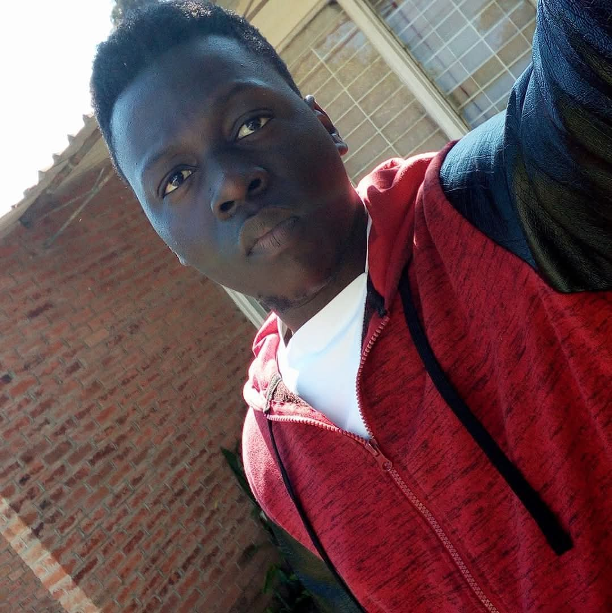

Software Development
Programming, web technologies, and structured problem-solving.
ICT GRADUATE · ASPIRING DEVELOPER
I am building my skills in web development and exploring how artificial intelligence can help solve practical information and technology challenges.
Curious mind. Practical learning. Meaningful solutions.

ABOUT ME
I am an Information and Communication Technology graduate with an academic foundation in programming, database management, computer networking, software engineering, systems analysis, and information security.
My studies have helped me develop analytical thinking, problem-solving, and an understanding of how technology can address real-world challenges. I am especially interested in web development, artificial intelligence, and intelligent information systems.
Through personal projects and continuous learning, I am working to turn academic knowledge into practical, secure, and user-friendly digital solutions. My goal is to gain hands-on industry experience, collaborate with other developers, and contribute to meaningful ICT projects.
Programming, web technologies, and structured problem-solving.
Databases, systems analysis, and information management.
Exploring artificial intelligence and practical technology innovation.
WHAT I'M BUILDING ON
A foundation in ICT, strengthened through practice and continuous learning.
C, C++, Java, and self-taught C# fundamentals.
HTML, CSS, JavaScript fundamentals, and responsive layouts.
Relational database concepts, data modelling, and SQL fundamentals.
Network fundamentals, protocols, and connectivity concepts.
Requirements, process modelling, and system design concepts.
Security principles, access control, and safe computing practices.
Learning about AI, machine learning, and generative AI applications.
Vectors, matrices, probability, and statistics.
VS Code, Git/GitHub fundamentals, and project documentation.
This section reflects areas of study and learning.
SELECTED WORK
A look at the ideas I am developing and the skills I am practising.
A proposed university library system exploring AI-assisted search and improved access to digital library resources.
In development
A responsive portfolio built to present my background, skills, learning journey, and project work.
Learning project
I will add new projects here as I complete practical exercises and build more experience.
Building step by step
LET'S CONNECT
I am interested in connecting with developers, learning from experienced professionals, and exploring entry-level ICT opportunities.
Email Me